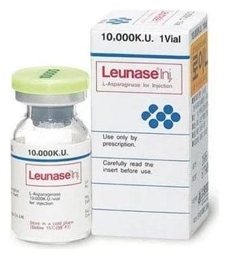

Leunase Enjektabl 10.000 IU Flakon, 1 Adet

Ne için kullanılır
KT · Bölüm 1LEUNASE kullanılmadan önce sulandırılan enjeksiyonluk tozdur. L-Asparaginaz içerir ve Antineoplastik ve İmmünomodülatör İlaçlar grubundadır. L-Asparaginaz, kandaki L- Asparagin adlı maddeyi parçalayarak tümör hücrelerini ihtiyaç duydukları besinden yoksun bırakmak yoluyla etkisini gösterir. LEUNASE flakonun ambalajında bir adet, tek kullanımlık cam flakon bulunur. LEUNASE, steril liyofilize kuru toz şeklinde, beyaz veya hafif gözenekli bir kütledir. LEUNASE çoklu kemoterapi şemalarının bir bileşeni olarak çocuk ve erişkinde akut lenfoblastik lösemi (lenfoblastların anormal bir şekilde kontrolsüz ve aşırı çoğalması ile oluşan kan hücrelerinin kanseri) (kronik miyeloid löseminin lenfoblastik dönüşümü dahil) ve çocuklarda non-Hodgkin lenfomanın (Lenfatik sistemin Hodgkin dışında kalan kanserleri) tedavisinde kullanılır.